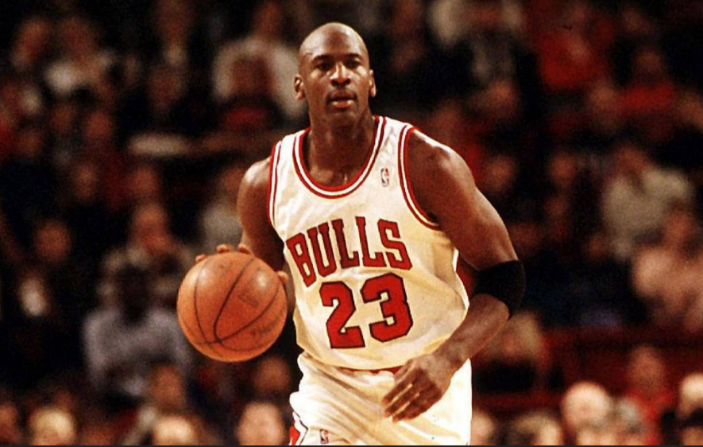
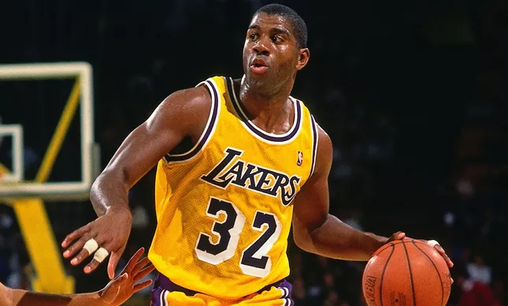
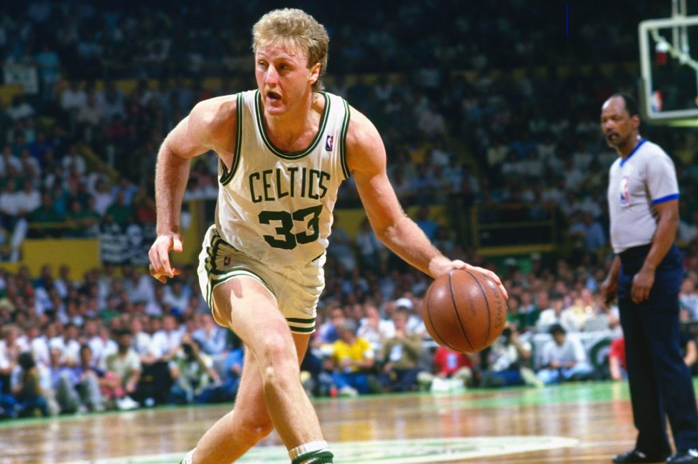
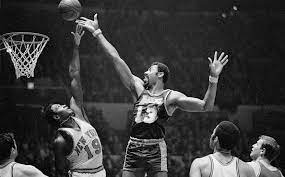
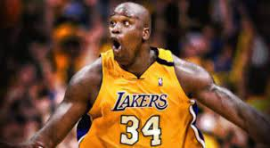

O basquete foi inventado nos Estados Unidos da América no início de dezembro de 1891 na Associação Cristã para Moços (YMCA) de Springfield, Massachusetts, pelo professor canadense James Naismith (1861-1940). O professor buscava um esporte intenso que pudesse ser praticado pelos alunos dentro do ginásio por conta do inverno rigoroso e da chuva no norte dos Estados Unidos.O professor prendeu então dois cestos de pêssego no alto de uma parede e as equipes tinham que encestar a bola. O professor Naismith mediu a altura das cestas e registrou 3,05 metros, essa altura é a mesma até hoje.
Os primeiros jogos de basquete foram disputados em equipes de nove atletas. Logo após, ainda em 1892, o professor Naismith optou pelo jogo de cinco contra cinco. Em 1898, foi instituída a regra que impede os dois dribles (quicar a bola, segurá-la e voltar a quicar). Algumas outras regras do basquete foram sendo adaptadas ao longo do tempo. A tabela (placa retangular localizada atrás da cesta) foi introduzida em 1906 com o objetivo de impedir que os espectadores do jogo que ficavam em mezaninos, interferissem nos arremessos. Isso possibilitou também os rebotes, alterando o modo do jogo. Em 1954, foi instituída a regra dos 24 segundos, com o objetivo de dar mais velocidade ao jogo. Segundo a regra, cada equipe tem 24 segundos de posse até arremessar a bola à cesta. Com o objetivo de dar mais dinamismo ao jogo, a Federação Internacional de Basquetebol (FIBA) propôs uma nova mudança. A partir de 2018, o limite para o arremesso em caso de rebote ofensivo passa a ser de 14 segundos (antes eram os mesmos 24 segundos).
Ao longo da história do basquete, muitos foram os jogadores que se destacaram. Alguns nomes ficaram marcados e serão lembrados por muitas gerações. A liga de basquete americana (NBA) eterniza alguns atletas em seu hall da fama. Outros, ainda em atividade, como LeBron James e Stephen Curry buscam entrar para esse seleto grupo, que conta com nomes como Michael Jordan, Magic Johnson e os brasileiros Hortência e Oscar.
Michael Jeffrey Jordan é um empresário e ex-basquetebolista estadunidense que atuava como ala-armador. É considerado por muitos como o melhor jogador de basquete de todos os tempos e por muitos como um dos mais importantes desportistas masculinos da história.
Nascimento: 17 de fevereiro de 1963 (idade 59 anos), Brooklyn, Nova Iorque, Nova York, EUA Altura: 1,98 m
Earvin "Magic" Johnson Jr. é um empresário e comentarista esportivo norte-americano. É mais conhecido pela sua carreira como basquetebolista na National Basketball Association, na qual foi armador e, posteriormente, presidente de operações desportivas do Los Angeles Lakers.
Nascimento: 14 de agosto de 1959 (idade 62 anos), Lansing, Michigan, EUA Altura: 2,06 m Fim de carreira: 1996
Larry Joe Bird é um ex-jogador, treinador e executivo de basquetebol da National Basketball Association norte-americano.
Nascimento: 7 de dezembro de 1956 (idade 65 anos), French Lick, Indiana, EUA Altura: 2,06 m Draft da NBA: 1978
Wilton Norman Chamberlain foi um jogador de basquete americano que jogou como pivô e é considerado um dos maiores jogadores da história. Ele jogou no Philadelphia/San Francisco Warriors, Philadelphia 76ers e o Los Angeles Lakers da National Basketball Association.
Nascimento: 21 de agosto de 1936, Filadélfia, Pensilvânia, EUA Falecimento: 12 de outubro de 1999, Bel Air, Los Angeles, Califórnia, EUA Altura: 2,16 m
Shaquille Rashaun O'Neal é um empresário, comentarista esportivo e ex-basquetebolista norte-americano que atuava como pivô. "Shaq", como ficou conhecido, é frequentemente descrito por especialistas e entusiastas do basquete como um dos jogadores mais dominantes da história da National Basketball Association.
Nascimento: 6 de março de 1972 (idade 50 anos), Newark, Nova Jersey, EUA Altura: 2,16 m
